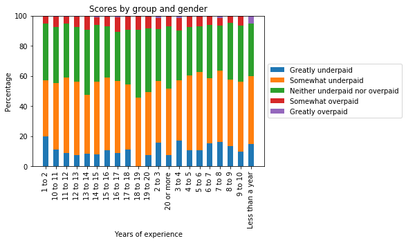
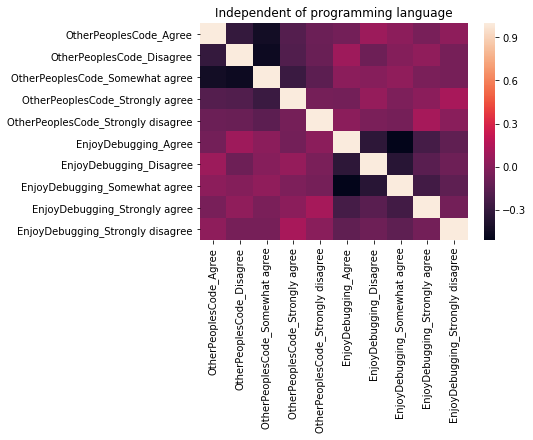
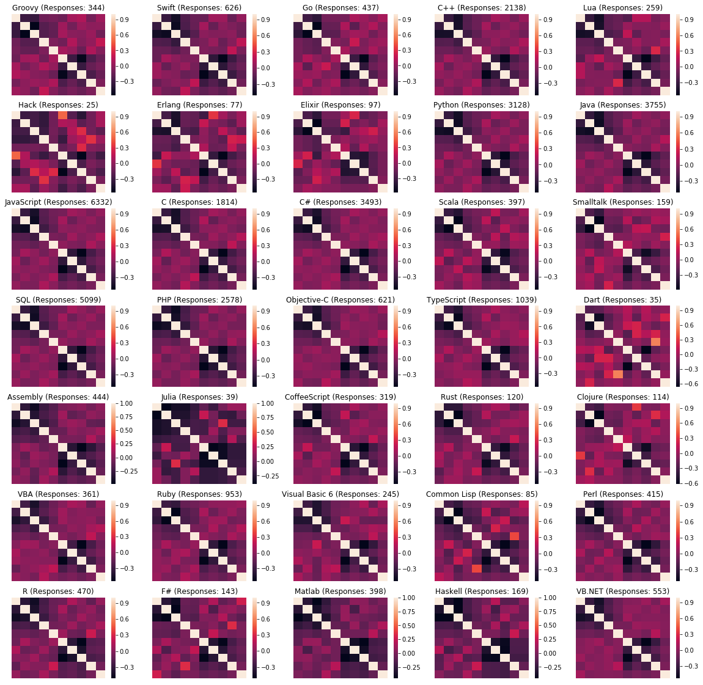

TL;DR: Have a look at the last table at the bottom to get the answers for the following three questions:
- Exists a correlation between Overpaid and the programming experience?
- Is there a programing language specific correlation between “OtherPeoplesCode - Maintaining other people’s code is a form of torture” and “EnjoyDebugging -I enjoy debugging code”?
- How many people, who program in Python, follow the PEP8 guidelines and use spaces instead of tabs?
Stackoverflow performs an anual survey. As it is used by many developers, it is “the largest and most comprehensive survey of people who code around the world” Ref.
The survey covers a wide range of topics. From the technologies used to production blockers to working conditions, everything is covered.
Questions which will be answered in the following parts:
To get an idea of this huge data set, I had a look into the schema file which is provided additionally to the data. It contains a description for the different answers. In the following text, I would like to answer the following questions which came to me while looking at the data. These questions refer to the people behind the accounts, not to Stackoverflow relevant evaluation. Here are my questions:
| # | Question | Helpful columns |
|---|---|---|
| 1 | Exists a correlation between Overpaid and the programming experience? | YearsProgram, Overpaid |
| 2 | Is there a programing language specific correlation between “OtherPeoplesCode - Maintaining other people’s code is a form of torture” and “EnjoyDebugging -I enjoy debugging code”? | HaveWorkedLanguage, OtherPeoplesCode, EnjoyDebugging |
| 3 | How many people, who program in Python, follow the PEP8 guidelines and use spaces instead of tabs? | HaveWorkedLanguage, TabsSpaces |
The survey contained 154 questions. In total, there are 19102 survey responses. As the data is so broad, in the following part, only the used data columns are mentioned and explained if needed.
To determine a correlation, you need values in the corresponding columns. Therefore, in the first step, all data records were removed where the entry in Overpaid was missing. By this step, the number of responses reduced from 19102 to 5184.
YearsProgram is a categorical value, which define a time spans of one year each. These values are converted into a nested dictionary which match the years of experience with the Overpaid rate as it can be seen below.
## YEARS PROGRAM
# Create a nested dictionary which matches the years of experience with the overpaid rate
q1_dict_experience = defaultdict(dict)
for key, data in df_q1.groupby(by=['YearsProgram', 'Overpaid']):
experience = key[0]
overpaid_target = key[1]
value = data.YearsProgram.count()
q1_dict_experience[experience][overpaid_target] = value
To get comparable values for each time span, the values are calculated as percentage.
As it can be seen in the following figure, no correlation exists between the feeling of beeing Over- or Underpaid with the years of experience. Of course there are some fluctuations, but there are no significant differences that indicate a trend over the years of programming experience.

In the stackoverflow data set exists a column HaveWorkedLanguage which contains a list of the different programming languages a respondent has been working with already. This list has been split into binary columns for each programming language. This preprocessing step can be found here
Both of the other columns OtherPeopleCode and EnjoyDebugging are categorial and preprocessed by one-hot-encoding, as shown below.
# ENJOY DEBUGGING
tmp = pd.get_dummies(df_q2.EnjoyDebugging, prefix='EnjoyDebugging', prefix_sep='_')
df_q2[tmp.columns] = tmp
df_q2 = df_q2.drop(labels=['EnjoyDebugging'], axis = 1)
My assumption is that someone who likes to debug and fix code, might also be interessted in understanding other peoples code as he does it often when searching for solutions. To test my assumption, I generated a correlation matrix between the two columns.

The interesting parts of the figure are the upper right and lower left quadrant. The other two quadrants show the correlation between all possible values for the columns with them self.
As it can be seen there is no strong correlation between the two features.
Some programming languages are harder to read and understand than others, so I recomputed the correlation matrix for each available programming language.

For some programming languages, there are some small identications agreeing or disagreeing with my assumption but not as clear as I thought it would be. To get an idea significant the values are, I added the number of responses which were available for each language.
As I write most of the time in Python, I was curious how many of the users use Spaces for indentation as it is proposed in the PEP8 guidelines.
For this analysis, only two columns are needed: Python and TabsSpaces. The column Python has been generated as described in the preprocessing of Question 2. The corresponding code can be found here. The column TabsSpaces has been converted into three binary columns, one for Tabs, one for Spaces and one for users who use both.
For the analysis, some calculations have been made. Here are the results:
Three questions about the stackoverflow survey of 2017 have been answered in this text. In the following table, there you can find the summary of the results.
| # | Question | Answer |
|---|---|---|
| 1 | Exists a correlation between Overpaid and the programming experience? | No, the impression of the respondent if they are over- or underpaid is not strongly influenced by their programming experience. |
| 2 | Is there a programing language specific correlation between “OtherPeoplesCode - Maintaining other people’s code is a form of torture” and “EnjoyDebugging -I enjoy debugging code”? | No clear correlation could be found between OtherPeoplesCode and EnjoyDebugging. There are language specific changes, but nothing extraordinary. |
| 3 | How many people, who program in Python, follow the PEP8 guidelines and use spaces instead of tabs? | 50.46 % of all python users in this survey use spaces as it is suggested by the PEP8 pipelines. |
The code of this analysis can be found here.